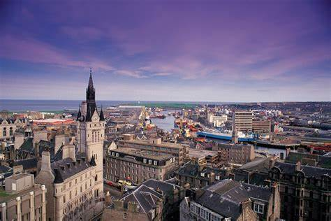

Where is Aberdeen?
Aberdeen, also known as ‘The Granite City’, is located in the northeast of Scotland, overlooking The North Sea. This coastal city is known for the granite architecture and oil manufacturing.
What is Aberdeen known for?
Aberdeen is best known for the granite architecture which gives the city a silver appearance, hence the name ‘Granite City’. Aberdeen is the ‘oil capital of Europe’, as lots of oil is produced from the North Sea. There are many attractions within Aberdeen, such as, Aberdeen Football Club, Maritime Meuseum, and the beach landscapes. As well as one of the oldest Universities in Scotland, University of Aberdeen. As previously mentioned, Aberdeen is home to Aberdeen football club, bringing supporters to the city every couple months.
Population...
The estimated population of Aberdeen in 2024 is 214,153. Aberdeen ranks 34 in the UK population.
Aberdeenshire
Aberdeenshire is the outskirts of Aberdeen. Aberdeenshire sights typically are more natured and forestry, with small towns and independent shops. Some areas in Aberdeenshire include Inverurie, Ellon, Balmedie, Potterton, etc. Aberdeenshire is more rural and localised with hidden beaches and descendent shops, and typically has a higher poplation than Aberdeen due to the largenness of the area. The populcation currently sits at 260 000.